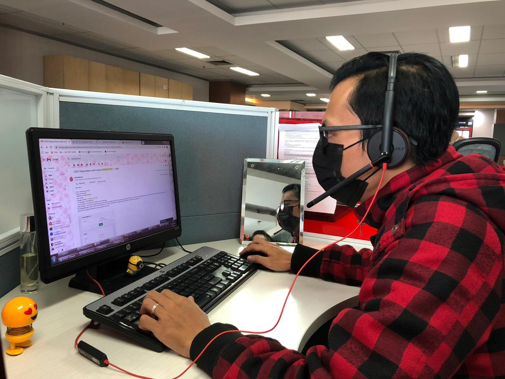
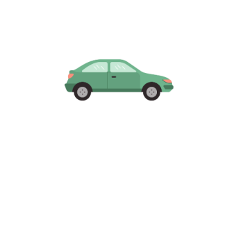

Ringkasan interaktif dari perjalanan kasus, dokumentasi tim, mini games, hingga gallery CHO dalam satu halaman website statis yang rapi dan modern.
*Struktur dan konten diadaptasi dari slide PPT CHO Record Sample.
Alur penanganan berbagai jenis kasus oleh CHO, mulai dari pengecekan awal hingga case closed, ditampilkan dalam bentuk timeline yang mudah dipahami.
Case terkait status NGRS / transaksi pelanggan.
Verifikasi apakah terdapat transaksi atau tidak pada sistem.
CHO melakukan callback ke pelanggan dan menginformasikan bahwa case akan dikoordinasikan ke tim IT. IT melakukan pengecekan lanjutan pada status NGRS dan membuat laporan koordinasi.
CHO kembali menghubungi pelanggan untuk menyampaikan hasil pengecekan status NGRS dari IT.
Setelah informasi disampaikan dan disetujui pelanggan, case dinyatakan selesai.
Case terkait migrasi Kartu Halo belum aktif.
Pengecekan status nomor:
CHO melakukan analisa case dan callback ke pelanggan bahwa case dalam proses koordinasi dengan OBC.
OBC melakukan eksekusi migrasi Kartu Halo dan membuat laporan koordinasi jika migrasi belum aktif.
CHO menginformasikan ke pelanggan bahwa migrasi Kartu Halo telah aktif berdasarkan hasil eksekusi dan koordinasi.
Case ditutup setelah fitur migrasi sudah aktif dan sesuai kebutuhan pelanggan.
Permintaan ganti kartu online dari pelanggan.
Validasi data pelanggan:
Jika data tidak valid, CHO callback bahwa ganti kartu online tidak dapat diproses.
CHO menjelaskan syarat & ketentuan ganti kartu online:
CHO menghubungi Grapari terdekat dengan lokasi pelanggan untuk proses ganti kartu, monitoring pengiriman dan konfirmasi ke pelanggan.
Setelah kartu diterima dan aktif, case dinyatakan selesai (Phase 1).
Case ketidaksesuaian penggunaan kuota telepon dan pulsa terpotong.
CHO melakukan pengecekan dan analisa case, termasuk histori penggunaan dan anomali jika ada.
Jika hasil pengecekan menunjukkan pulsa pelanggan valid untuk refund, CHO:
CHO menginformasikan hasil pengecekan pulsa terpotong dan status refund kepada pelanggan.
Case selesai setelah refund berhasil dan pelanggan menerima informasi dengan jelas.
Kendala sinyal tidak stabil dilaporkan oleh pelanggan.
Pengecekan awal:
Tim Network melakukan pengecekan dan analisa lebih lanjut, lalu memberikan hasil koordinasi terkait kendala sinyal.
CHO menginformasikan ke pelanggan sesuai hasil koordinasi tim Network, termasuk solusi dan estimasi perbaikan.
Case ditutup setelah perbaikan berjalan dan pelanggan terinformasikan dengan baik.
Dokumentasi momen-momen terbaik CHO, mulai dari aktivitas harian hingga kegiatan spesial. Silakan ganti gambar placeholder dengan foto asli dari kegiatan CHO.


*Ubah URL gambar di atas dengan foto asli (misalnya img/gallery1.jpg, img/gallery2.jpg).
Dari slide: “Mini Games – Scan Here!”. Di website ini, bagian ini bisa digunakan untuk QR code, link games, atau aktivitas interaktif lain untuk CHO.
Ganti kotak di atas dengan file gambar QR code, misalnya:
<img src="img/qr-mini-games.png" class="img-fluid rounded-4">
Adaptasi dari slide yang berisi struktur Team Leader dan Admin Support dalam “Family Tree”.
Bagian ini mengadaptasi slide “Case Gathering” yang menunjukkan aktivitas bersama dan penguatan kolaborasi tim CHO.
Case Gathering dapat berisi:
Tambahkan foto kegiatan atau agenda detail di sini agar sesuai dengan kegiatan aktual.
Diadaptasi dari slide yang memuat data diri, hobi, dan quote.
"Ada yang tak seberuntung kamu. Tapi rasa syukurnya melebihi dirimu."
*Anda bisa menambahkan profile lainnya dengan meng-copy blok kartu ini dan mengganti data di dalamnya.